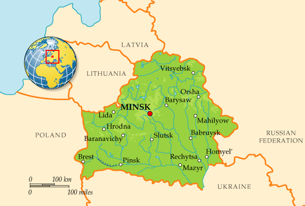
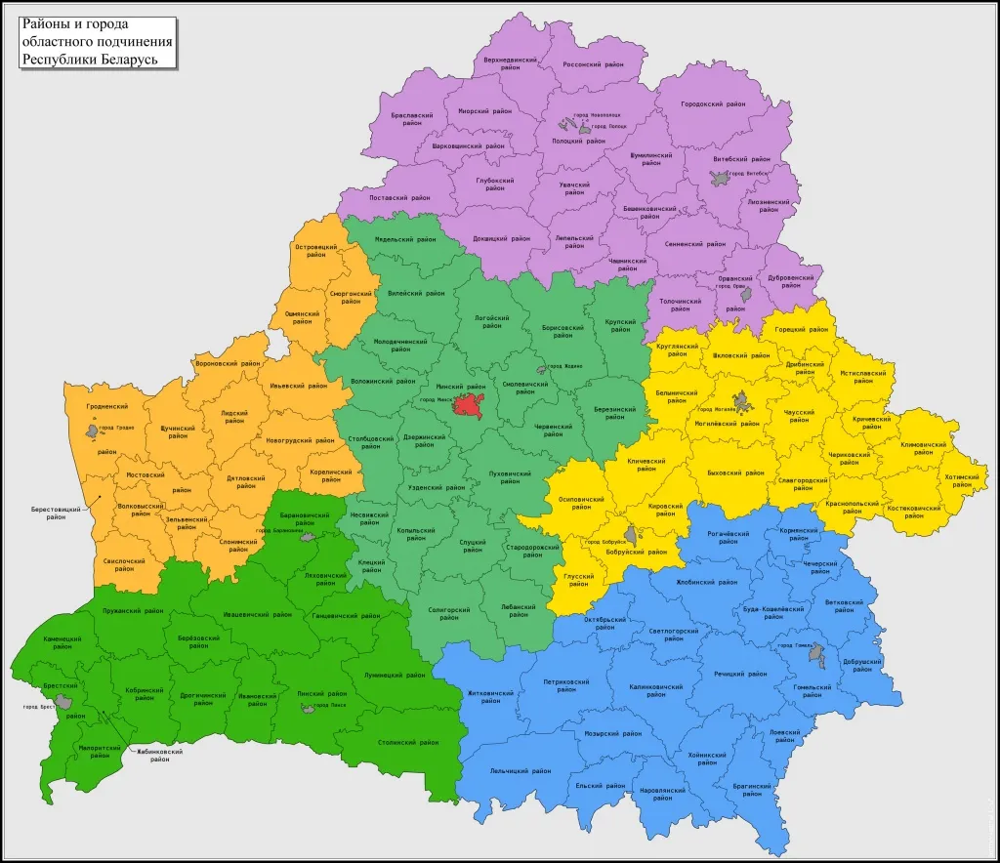
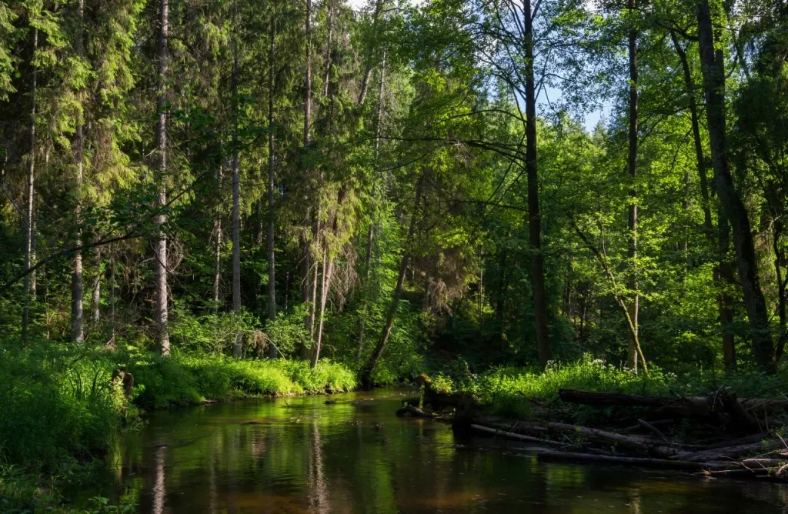
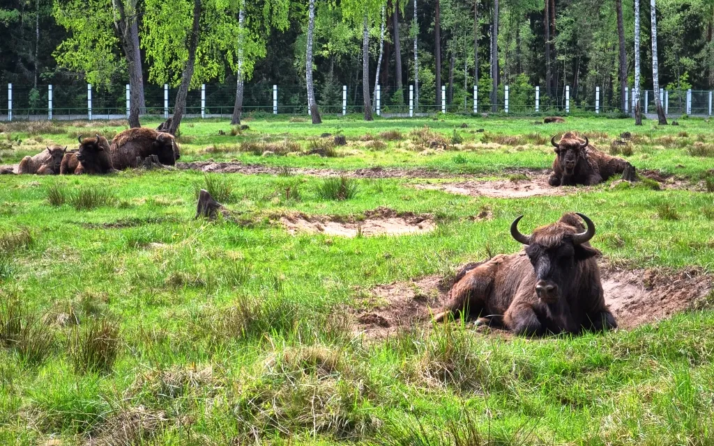

ГЕОГРАФИЯ
География Республики Беларусь
Беларусь расположена в центре Европы, имеет общие границы с пятью государствами: Россия, Украина, Польша, Литва и Латвия. Территория страны занимает площадь около 207,6 тысяч квадратных километров: протяженность границ государства с запада на восток составляет 650 км, а с севера на юг - 560 км. Страна не имеет выхода к морю, но благодаря своему географическому положению является важным торговым и транспортным коридором между Европой и странами СНГ. Беларусь находится на пересечении трансъевропейских транспортно-коммуникационных коридоров «Запад – Восток» и «Север – Юг».
Основные регионы Беларуси
Республика Беларусь делится на 6 областей (Брестская, Витебская, Гомельская, Гродненская, Минская и Могилевская области), включающих 118 районов, более 100 городов, 111 поселков городского типа, свыше 24 тысяч деревень.
Климат и погода в Беларуси
Умеренно континентальный климат Беларуси формируется под влиянием воздушных масс Атлантики. Зима, как правило, мягкая с продолжительными оттепелями, а лето – умеренно теплое.
Температура воздуха
Средняя температура воздуха изменяется в зависимости от регионов Беларуси. В июле средняя температура составляет от +17°C на севере до +18,5°C на юге; в январе колеблется от -4,5°C на юго-западе до -8°C на северо-востоке.
Осадки
На территории Беларуси в среднем за год выпадает 600–700 мм осадков. 70% осадков в виде дождя выпадает в апреле–октябре. Количество снежных дней в Беларуси от 75 на юго-западе до 125 на северо-востоке. Максимальная высота снежного покрова соответственно от 15 до 30 см.
Природа Беларуси уникальна. Рельеф преимущественно равнинно–холмистый. Средняя высота над уровнем моря — 160 м. Здесь произрастают редкие виды растений и животных. Чтобы защитить белорусскую природу от разрушительного влияния человека, в стране реализуются крупные природоохранные проекты, созданы государственные заповедники и заказники.

Леса Беларуси занимают около 65% площади страны. В них произрастают 28 пород деревьев и около 70 видов кустарников. Самые распространенные породы деревьев:
- береза (по всей стране)
- сосна (по всей стране)
- ель (северные районы)
- дуб (южные районы)

В республике находится один из крупнейших в Европе массивов первобытного реликтового леса - Беловежская пуща.
Животный мир страны представлен обитателями смешанных лесов, тайги и степей. Важное хозяйственное значение имеют промыслово–охотничьи виды животных — лисица, куница, заяц, выдра, хорь, горностай, а также лось и дикий кабан. Более 180 видов животных охраняются государством. В лиственных и смешанных лесах с развитым травяным покровом, в основном в Беловежской пуще, живут и представители реликтовой древней фауны – зубры.

ИНТЕРНЕТ-РЕСУРСЫ